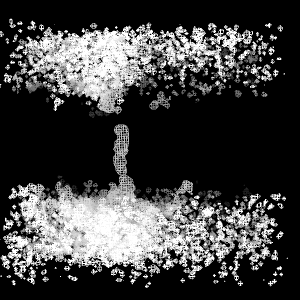
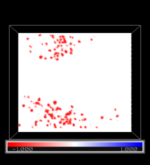
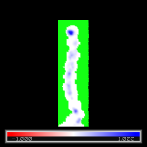
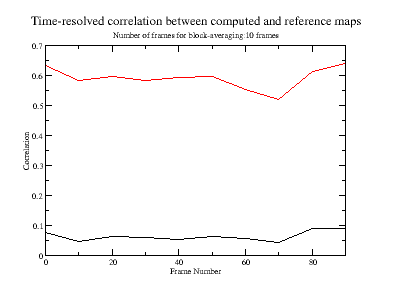
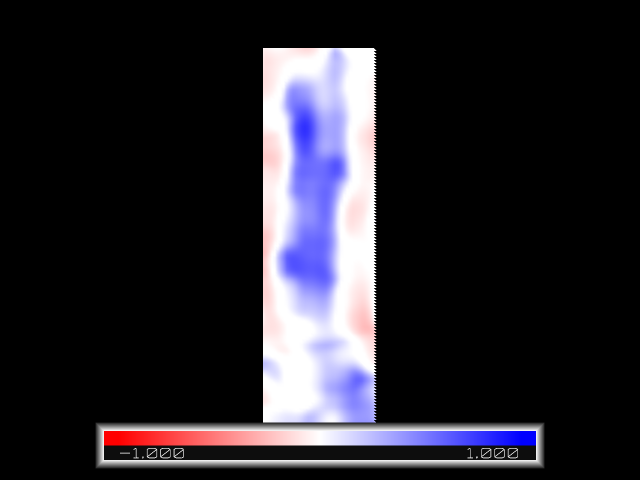
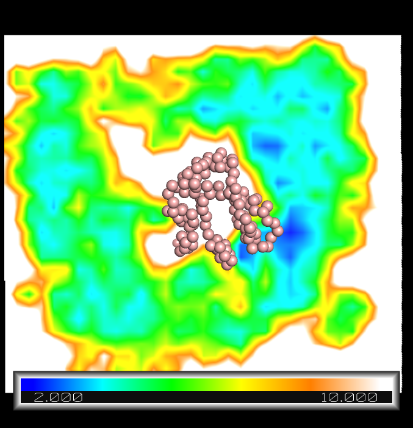

|
GROmaρs
A GROMACS-based toolset for the calculation and comparison of density maps from molecular dynamics simulations. Here, you will find information how to download, install, and execute the toolset.
Contents:
1) Download the GROMACS patch set including gromaρs here
2) Uncompress the downloaded directory:
tar xzvf gromaps.tar.gz
3) Go to the created directory
cd gromacs
4) Install GROMACS as usual (instructions here):
mkdir build
cd build
cmake .. -DGMX_BUILD_OWN_FFTW=ON -DREGRESSIONTEST_DOWNLOAD=ON
make
After installation, the GROmaρs tools will be accessible in the "build/bin" directory. They should appear in the list of programs as maptide, mapdiff, mapconvert, etc:
./bin/gmx help commands
To see the help of each individual tool run
./bin/gmx maptide -h
./bin/gmx map* -h
In the following, a set of examples will explain how to use the gromaρs tools. Download the folder with all the necessary input files to run the examples here. Uncompress the file and go to the created directory:
tar xzvf examples.tar.gz
cd examples
Let us assume that GROmaρs directory path is
GROmaps
All the GROmaρs commands will be reached in
$GROmaps/build/bin/gmx ...
In the following any gmx command refers to the command found in this path, which we ommit for simplicity.
-
Basic density-map calculation
We here compute the time-averaged density of a set of water molecules inside and around one of the four channels of yeast aquaporin. We consider a small trajectory fragment (aqy1.xtc) and a reference initial conformation (aqy1.gro). We compute the map at a grid resolution of 0.1 nm:
gmx maptide -f aqy1.xtc -s aqy1 -select 'resname SOL' -spacing 0.1 -mo
The output density map average.ccp4 (ccp4 format) can be visualized by any molecular visualization package. Here, we will use PyMOL. Open pymol

pymol average.ccp4
By default, PyMOL normalizes ccp4 maps, to standard deviation units and zero mean. to visualize the density contour at 1.0 sigma as a mesh type:
isomesh mesh, average, 1
The mesh displays the two water compartments and the water channel interrupted at the top by a tyrosine residue (not shown). Other useful map representations in PyMOL are isosurface, slice, and volume.
-
Density-map calculation with non-default Gaussian coefficients
By default GROmaρs considers 4 Gaussians per atom to spread the density (see methods in citation below). The Gaussian coefficients are obtained from the cryo-electron microscopy structure factors and they are listed in the file
$GROmaps/share/top/electronscattering.dat
For each atom, several Gaussians (lines) are defined. Each line contains the atomic number (column 1), followed by the amplitude A (column 2) and the width B (column 3) of each Gaussian. A modified electronscattering.dat file can be specified to maptide through the -gaussparameters flag. For example, for a Non-Default Atom named NDA, whose atomic number is X, and with N Gaussians, the entry in electronscattering.dat file should look like
X NDA
X A1(NDA) B1(NDA)
X A2(NDA) B2(NDA)
...
X AN(NDA) BN(NDA)
-
Difference map
We here calculate the difference between a computed and a reference map. First, we compute the map, by considering the water molecules which were exclusively inside the channel (coordinates z>0 and z<2 nm). The reference is the map computed in example (1). Grid parameters (extent and resolution) will be taken from the reference map (-refmap option):
gmx maptide -f aqy1.xtc -s aqy1.gro -refmap average.ccp4 -select 'resname SOL and z>1 and z<2' -mo average_z0-2-nm.ccp4
Then, we compute the difference
gmx mapdiff -compare average_z0-2-nm.ccp4 -refmap average.ccp4 -mo diff.ccp4 -comparefactor 1 -reffactor -1
We visualize the difference map with pymol

pymol diff.ccp4
We choose the map in slice representation, by clicking on the diff object at the right-hand side
A->slice->default
Rotate with the mouse to change the viewing orientation. Inside the channel, density is identical for the computed and the reference map (diff=0: white). Outside the channel the computed map has no density while the reference does (diff<0:red).
-
Masking
We can mask regions from the calculation. Let us first create a mask, which will include the volume occupied by the crystallographic water molecules and exclude the rest of the space. For that, we use the Room temperature X-ray structure of Aqy1 (5BN2 PDB code). We create the mask by running maptide (a mask is also a density map), reading size and resolution lattice from the experimental Xray map (-refmap) and selecting only crystallographic water molecules:
gmx maptide -f 5bn2.pdb -s 5bn2.pdb -refmap Aqy1_RT_Xray.ccp4 -select 'resname HOH' -mo mask.ccp4
The created mask has non-zero values for regions occupied by the water molecules and zero values everywhere else (as it is a map it can be visuallized e.g. by PyMOL) .
The density map is now computed, ignoring all grid points which have a value smaller than 1e-5 in the mask:
gmx maptide -f aqy1.xtc -s aqy1.gro -refmap Aqy1_RT_Xray.ccp4 -mask mask.ccp4 -maskcutoff 1e-5 -select 'resname SOL' -mo average_masked.ccp4
To visuallize the output map open pymol
pymol
Before loading the map, the normalization option must be turned off, so all masked points (which have NAN values) are ignored. Hence, in the pymol console type:

unset normalize_ccp4_maps
load average_masked.ccp4
Click on the average_masked object at the right-hand side:
A->slice->default
Unmasked regions (blue shade) correspond to density of water at the crstallographic water-molecule positions. Masked regions (green) correspond to the rest of the space.
-
Time-resolved global correlation
Here, we compute the global correlation coefficient between the computed map and the experimental X-ray map as a function of time, averaging over 10 frames (a time-windows of 200 ps):
gmx maptide -f aqy1.xtc -s aqy1.gro -refmap Aqy1_RT_Xray.ccp4 -select 'resname SOL' -blocksize 10 -correlation
View correlation with xmgrace:
xmgrace correlation.xvg
The correlation trace displays how much the computed map resembles the X-ray map as a function of time (frames). This calculation is very useful for these type of systems, for which an RMSD calculation is not straightforward. The correlation is very low, because the computed map contains only density for the water molecules while the reference experimental map has also density of protein atoms. The correlation improves if a mask (to only the water molecules) is applied:
gmx maptide -f aqy1.xtc -s aqy1.gro -refmap Aqy1_RT_Xray.ccp4 -mask mask.ccp4 -maskcutoff 1e-2 -select 'resname SOL' -blocksize 10 -correlation correlation_mask.xvg
Compare both correlations with xmgrace:
xmgrace correlation.xvg correlation_mask.xvg
unmasked is shown in black and masked in red.

-
Local correlation
In this example, we compute the local correlation of the time-averaged map and the X-ray map. First, we compute the map, taking grid parameters from the X-ray map, and masking all except the water-populated region :
gmx maptide -f aqy1.xtc -s aqy1.gro -refmap Aqy1_RT_Xray.ccp4 -select 'resname SOL' -mo average.ccp4
Then, we compute the local correlation. The correlation coefficient is computed in a cubic region, considering all neighbour grid points, which lay 0.15 nm away, from each grid point:
gmx mapcompare -compare average.ccp4 -refmap Aqy1_RT_Xray.ccp4 -localcorrelation localcorrelation.ccp4 -rlocal 0.15

We visualize the localcorrelation map with pymol
pymol
in the pymol console:
unset normalize_ccp4_maps
load loccorrelation.ccp4
Click on the average_masked object at the right-hand side:
A->slice->default
For the pore, where the water molecules are located, there are regions of high correlation (blue). For the rest of the space the computed map has zero density while the reference experimental map has protein-related density. Therefore, there, the maps are poorly correlated (white) or moderately anti-correlated (light red).
Useful information of the maps can be retrieved by:
gmx mapinfo -mi localcorrelation.ccp4
In particular, the miminum and maximum values [ -0.542903, 0.923177 ] reflect the range of the spatial correlation.
-
Spatial free energies
In this example we estimate the spatial free energy as -log(ρ). We consider a short fragment of coarse-grained trajectory of a GPCR membrane protein embedded in a bilayer of POPC lipids and cholesterol. Fist, we compute the density cholesterol:
gmx maptide -f gpcr.xtc -s gpcr.pdb -spacing 0.4 -gaussparameters CG_coeff.dat -select 'resname CHOL and within 3 of group "Protein"' -mo chol.ccp4
Then, we take the logarithm of this map:
gmx maplog -mi chol.ccp4 -mo logchol.ccp4 -fillundef minfloat
The flag "-fillundef minfloat" will set the minimum float (-3.40282E+38) to all grid points for which density is negative and therefore -log(rho) is undefined. This will help to distinghish these singularities from the rest
An absolute estimate of the free energy is obtained by multiplying the map by -1:
-log [ ρ(CHOL) ].
This is achieved by executing the command:
gmx mapdiff -compare logchol.ccp4 -refmap logchol.ccp4 -mo mlogchol.ccp4 -comparefactor -1 -reffactor 0
To visuallize the map in pymol:
pymol
in the pymol console:
unset normalize_ccp4_maps
load mlogchol.ccp4
load gpcr.pdb
hide
show spheres, poly
ramp_new ramp, mlogchol , [2,4,6, 8, 10] , [blue, cyan, green, yellow , orange, white]
slice_new slice, mlogchol
color ramp, slice

The absolute free energy is presented in a color map around the GPCR (spheres). Near the protein there are spots with high affinity compared to the bulk regions (smaller energy values in cyan an blue near the protein compared to those in green far away from the protein).
The relative free energy is defined as: -log [ ρ(CHOL) / ρ (POPC) ].
In practice, it is obtained by using the mapdiff command:
gmx mapdiff -compare logchol.ccp4 -refmap logpopc.ccp4 -mo mlogchol_relative.ccp4 -comparefactor -1 -reffactor 1
Note that log[ ρ(POPC) ] must have been obtained beforehand (e.g. following a similar protocol as that described above for CHOL).
For work related to the GROmaρs tools, please cite this article:
Rodolfo Briones, Christian Blau, Carsten Kutzner, Bert L. de Groot, and, Camilo Aponte-Santamaría. GROmaρs: a GROMACS-based toolset for the calculation and comparison of density maps from molecular dynamics simulations. Submitted.
|